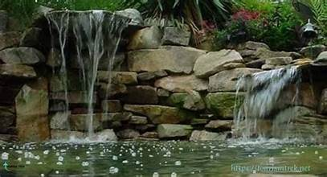

اكتشف أهم المعالم التاريخية والطبيعية بطريقة جذابة
تأسست حدائق الشلالات في الإسكندرية خلال أوائل القرن العشرين لتكون متنفسًا طبيعيًا للمدينة. صممت الحدائق بحيث تحتوي على مسارات ممهدة، بحيرات صناعية، وشلالات اصطناعية تضيف جمالًا خاصًا للمكان. الهدف من إنشائها كان توفير مكان هادئ للسكان والزوار للاستمتاع بالطبيعة بعيدا عن صخب المدينة.
شهدت الحدائق العديد من التحديثات على مر العقود لتضم نباتات وأشجار نادرة من جميع أنحاء العالم. أصبحت الحدائق مقصدًا للرحلات المدرسية، السياحة الداخلية، والفعاليات الثقافية. توفر الحدائق تجربة غنية تجمع بين التعلم، الاسترخاء، والتقاط الصور التذكارية وسط الشلالات والنباتات المتنوعة.
عودة للصفحة الرئيسية